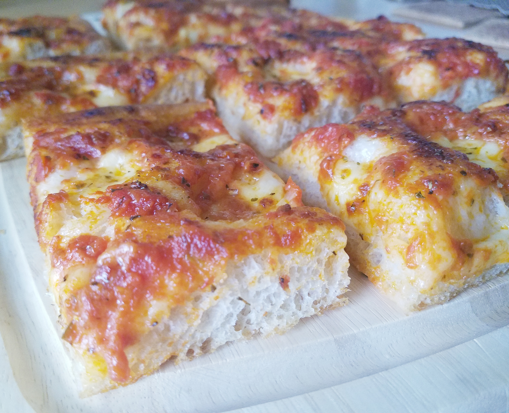

Pizza Recipe

Description
It's delicious amazing pizza sent down from the gods themselves.
What more is there to say?
Ingredients
- 1 1/4 cups warm water
- 1 tsp active dry yeast
- 3 cups bread flour
- 1 1/2 tsp fine salt
- 1/4 cup olive oil
- 1 (28oz) can plain crushed tomatoes
- 1 (14oz) can pizza sauce
- 8 oz low-moisture whole-milk mozzearella (thinly sliced)
- 1/4 cup grated pecorino romano cheese
Steps
- Combine water and yeast in a small bowl. Let stand until yeast softens and begins to form a creamy foam, about 5 minutes.
- Combine flour and salt togther in the bowl of a stand mixer fitted with dough hook attachment. Pour in yeast mixture. Knead dough untilk smooth, about 7 minutes.
- Grease a large bowl lightly with olive oil. form dough into a tight ball and lightly grease the top. Place in the bowl; cover loosely with plastic wrap. Let rise until doubled in volume, about 30 minutes.
- Mix crushed tomatoes and pizza sauce together in a bowl to make sauce.
- Grease a heavy-gauge rimmed 12x17-inch baking sheet generously with olive oil. Press dough into the bottom. Prick dough all over with a fork. arrange mozzarella cheese slices over dough; cover with 1 cup sauce. Sprinkle Pecorino Romano cheese on top. Drizzle reamining olive oil over pizza.
- Let pizza rise in a warm area until puffy, about 1 hour.
- Preheat oven to 450 dgrees F (230 degrees C).
- Bake pizza on the cenbter rack of the preheated oven until edges are very dark brown but top is not burnt, 15 to 20 minutes. Cool in the pan for 5 minutes before slicing into squares.